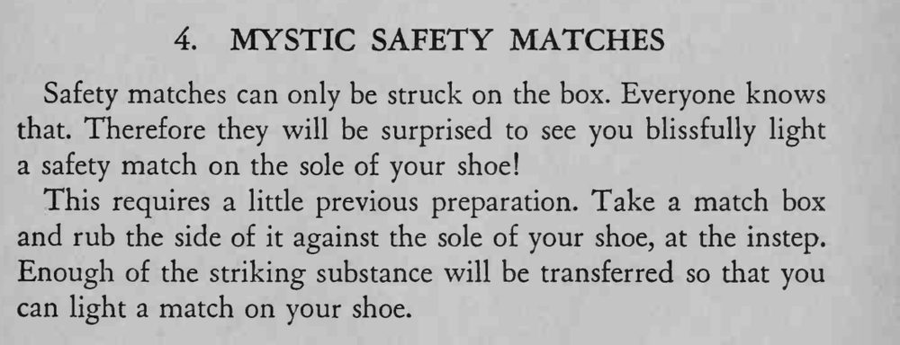

安全火柴本来只能在盒子上划着，魔术师却在自己的鞋底上一下划燃了。
要在脚背位置的鞋底上蹭，表演时把鞋底朝上才顺手。

Safety matches can only be struck on the box. Everyone knows that. Therefore they will be surprised to see you blissfully light a safety match on the sole of your shoe! This requires a little previous preparation. Take a match box and rub the side of it against the sole of your shoe, at the instep. Enough of the striking substance will be transferred so that you can light a match on your shoe.